↩️
先讀過 EP01 嗎？ 這一集是「第二輪」。EP01 教的是
從零建立 （看懂參考設計 → 派分身讀論文 → 生成知識庫 → 寫規則書）。EP02 教的是
迭代 ：對已經做好的東西不滿意、要它更好——這其實才是真實研究工作的常態。沒看過 EP01 也沒關係，往下讀即可；想補課就點
EP01 建立知識庫雛形 。
📺 影片版
VIDEO
不想讀字？可以先看影片導覽，再回來細讀；兩者內容一致。
🔗
看 EP02 養大後的知識庫： 這一集做出來的版本（11 篇論文、8 篇概念條目、彩色關鍵字網路）已上線，點此直接逛逛 →
目錄
想直接看怎麼實做，可以從 Part 1 — 完整對話時序 開始。
對話框顏色說明 名詞速查表 迭代心法（EP02 的 5 個重點） Part 1 — 完整對話時序 Part 2 — 最佳實踐清單 Part 3 — 本次成果（養大後的知識庫） Part 4 — 10 個核心教訓 結語：給初學者的下一步
對話框顏色說明
後面 Part 1 會逐句、完整重現使用者的每一句指令 （截圖只是輔助，讓你更有臨場感；真正要看清楚的是文字框裡的內容）。AI 的回應與動作則用灰底「AI 做了什麼」摘要 。所有使用者發言用五種顏色標示「這句話在做什麼」：
🟢 使用者： 請求動作 — 叫 AI 去做一件事。
🔵 使用者： 問問題 — 詢問現況、原理、估算。
🟣 使用者： 關鍵決策 — 在 AI 攤開的選項中做選擇。
🟡 使用者： 中斷 / 澄清 — 補充條件、修正誤會。
🔴 使用者： 設計回饋 / 糾錯 — 指出方案或產出的根本問題。
EP02 的精神就藏在這裡：迭代 = 大量的 🔴 與 🟡 。一個作品會變好，靠的不是第一次就做對，而是你願意一次次說「這裡不夠好、那裡改一下、這個其實錯了」。
名詞速查表
看到不懂的詞先回來查。（EP01 講過的基礎詞——知識庫、真實來源、metadata、Subagent、CLAUDE.md——這裡不重覆，需要的話回 EP01 名詞速查表 。）
A. 這一集新出現的知識庫概念
名詞 白話解釋 概念條目 (topic) 綜整多篇論文寫成的一篇 wiki 文章（例如〈連結體是什麼〉）。它是知識庫的「主幹」，讓人先懂全貌、再深入個別論文。 關鍵字網路 把所有頁面的關鍵字畫成一張網。點一個關鍵字，等於搜尋出所有提到它的文章與論文。 force-directed layout（力導向佈局） 用「物理力」自動排節點位置的演算法：節點互相排斥、有關聯的互相吸引，跑幾百次後相關的就自己聚成一團。關鍵字網路就是這樣排的。 論文基本資料 (bib) 期刊／卷期／頁碼／發表年月／機構等正式書目資訊。 科普版 / 學術版 同一篇論文寫兩種版本：科普版給高中生（白話、比喻），學術版給研究人員（方法寫得很細）。 LaTeX / MathJax LaTeX 是排數學式的標準語法；MathJax 是讓網頁把 LaTeX 渲染成漂亮數學符號的工具。 lint（程式碼／內容健檢） 用小程式自動掃過產出，揪出格式問題（這裡用來抓不成對的括號、被當成標籤的裸 < >）。
B. 這一集用到的 Agentic AI 能力
名詞 白話解釋 memory（記憶） AI 可以把你的偏好寫進長期記憶檔，之後每次工作自動讀取。本集把「BSC 成員名單」「嚴禁簡體中文」都記了下來。 AskUserQuestion（決策選單） 遇到該由你決定的岔路，AI 跳出選項讓你點，而不是替你猜。本集用在「5 篇新論文怎麼收」「主題地圖怎麼擴」。 WebSearch（網路搜尋） AI 上網查資料的能力。本集用它查 LICONN 論文的正式出版卷期頁碼。 CSS specificity（樣式優先序） 網頁樣式打架時誰贏的規則。本集 AI 自己踩到這個坑——它寫的段落間距「被另一條更強的舊規則蓋掉」，所以一直沒生效。
迭代心法（EP02 的 5 個重點）
EP01 講「怎麼開始」；EP02 講「怎麼把已經做好的東西越改越好」。先記住這 5 件事：
不滿意就直說，而且要具體。 「首頁只是論文清單、缺少概念層」比「首頁不好看」有用一百倍——越具體，AI 越改得準。「擴寫」不等於「重做」。 要 AI 寫深度內容時，明確要求它回原始資料重讀 ，否則它會用既有文字膨脹，看起來變長、其實沒變紮實。AI 會出錯，你要檢查它的產出。 這一集 AI 自己踩了三個坑（樣式被蓋掉、裸符號被當標籤、混進簡體字），全靠「驗證」和「使用者糾錯」才抓到。別把「它說完成了」當成「真的對了」。 規則書要跟著長大。 知識庫變複雜，就把新的維護流程寫回 CLAUDE.md，未來每次自動遵守——這樣它才不會越改越亂。範圍與方向，停下來讓你決策。 要不要擴大收錄範圍、主題地圖要不要擴建——這些是「你的事」，AI 該攤開選項問你，而不是自作主張。
PART 1 完整對話時序以下按時間順序，逐句重現使用者的指令 （彩色框，逐字）＋ AI 做了什麼 （灰框，摘要）。穿插的截圖讓你看到當時的真實畫面與「改版前後」對照。照著做，你就能自己完成同樣的迭代。
1 不滿意：首頁只是論文清單EP01 做出的知識庫，首頁長這樣——其實就是把論文一篇篇列出來、配上篩選器。使用者覺得不夠：
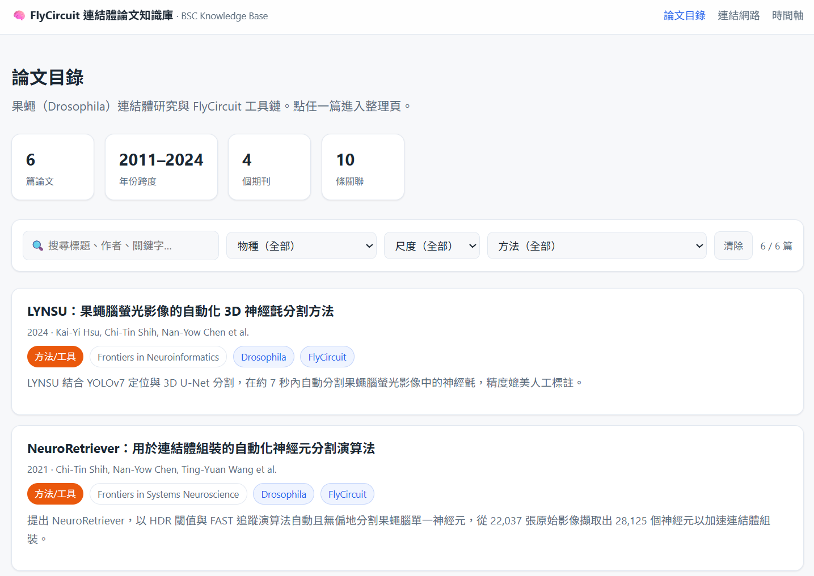
改版前（EP01）： 首頁就是「論文目錄」＋ 篩選器，缺少「把知識消化成概念」的那一層。
🔴 使用者： 我對 EP01 做出來的成果不太滿意：1. 首頁目前其實是把論文逐篇列出。2. 連結網路是論文之間的連結，節點的名稱有的是「作者＋年份」、有的是「主題＋年份」（不統一）。請做以下修改：1. 你綜整目前所有的論文後，從裡面抽出重要的概念，各寫一篇類似 wiki 的介紹文章，文章裡面會連結到各論文條目，同時列出每篇文章的「關鍵字」。2. 除了論文間連結之外，要增加前項「關鍵字」的連結網路，點關鍵字相當於搜尋功能。
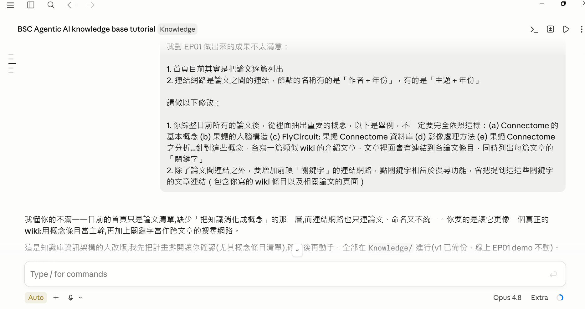
實際對話截圖： 這就是 Claude Code 的畫面。使用者點出兩個不滿，AI 回應理解並提出改版方向。
AI 做了什麼 沒有急著動手，而是先把這次改版當成資訊架構的大改 ：把「首頁 = 論文清單」升級成「首頁 = 概念地圖」。它提出一份計畫——新增 5 篇「概念條目」（綜整 6 篇論文抽出核心概念，各寫一篇），並新增一張「關鍵字網路」。動手前先把計畫攤開讓使用者確認。全程只動本機 Knowledge/，EP01 的線上版完全不碰。
2 確認計畫、定下節點命名AI 把計畫攤開（5 篇概念條目清單、論文網路節點要怎麼命名），請使用者拍板：
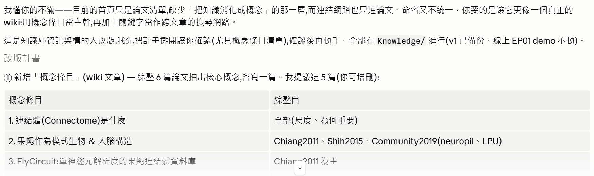
實際對話截圖： AI 的「改版計畫」——列出 5 篇概念條目分別綜整哪些論文，請使用者確認。
AI 問你 動手前想跟你確認：① 上面 5 篇概念條目夠不夠、要不要增刪（例如要不要獨立一篇「連結體研究的開放工具鏈」）？② 論文網路節點用「第一作者＋年份」可以嗎？（工具型論文如 Kaleido 會變成 Wang 2018，你也可以選擇保留工具名。）
🟣 使用者： 1. 可以。2. 主題（2 個字以內）＋年份。
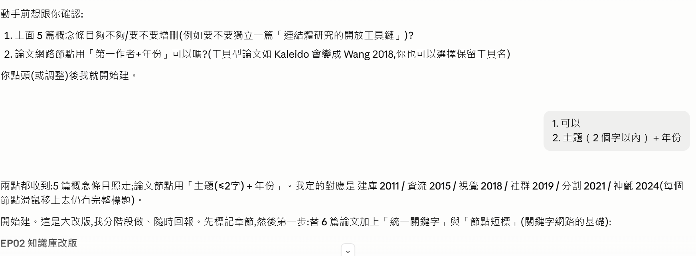
實際對話截圖： 使用者拍板——5 篇照走、論文網路節點統一用「主題（≤2 字）＋年份」。
AI 做了什麼 派 Subagent 綜整論文、寫出 5 篇概念條目，並把全部論文節點改成統一的「主題＋年份」短標（建庫 2011／資流 2015／視覺 2018…）。同時打造關鍵字網路：收集所有頁面的關鍵字、算出共現關係、用力導向佈局排成一張可點選的網。改完跑 build.py 重生導覽頁。
3 一次給四個微調🟢 使用者： 主題地圖 · 概念條目目前是「磚塊式」，做一個切換按鈕可以切換磚塊式跟條列式（default 是條列式，我的習慣）。
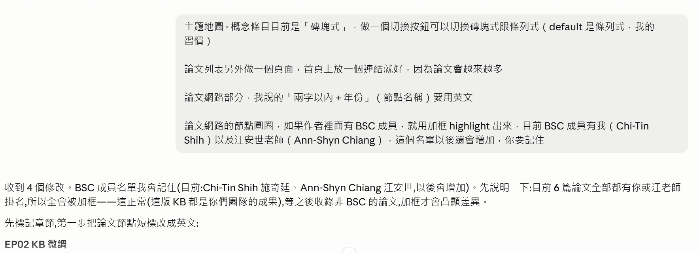
實際對話截圖： 使用者一次給四個修改，AI 逐項收下並把「BSC 成員名單」記進記憶。
AI 做了什麼 四項逐一處理：① 首頁加「條列／磚塊」切換鈕，預設條列、並用瀏覽器記住你的選擇；② 把論文清單獨立成 papers.html，首頁只留一個入口；③ 節點短標改英文；④ 在 build.py 建一份 BSC_MEMBERS 名單，作者含名單內成員的論文節點就加上橘色外框。並把「BSC 成員名單會持續增加」這件事寫進長期記憶 。AI 也誠實指出：目前 6 篇全是你們團隊的，所以會全部加框——等收錄外部論文，加框才看得出差異。
其中第 ① 項——概念條目的「條列／磚塊」切換——長這樣：
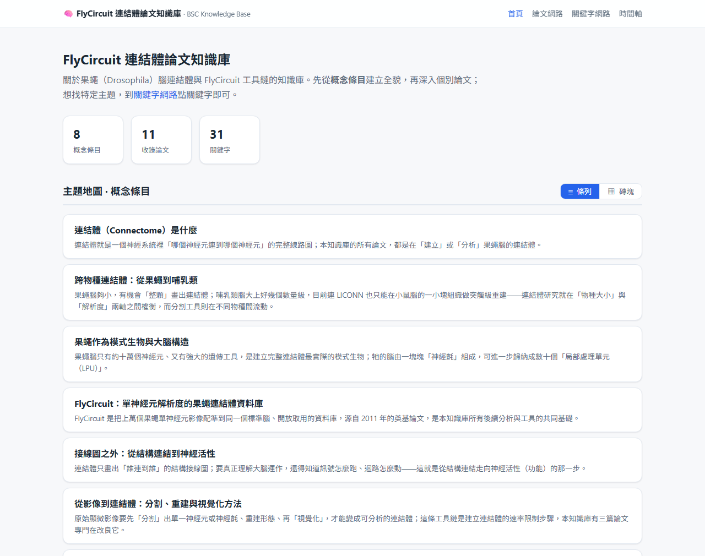
條列式（預設）： 8 篇概念條目排成精簡的一行行，一眼掃完——這是使用者指定的預設。
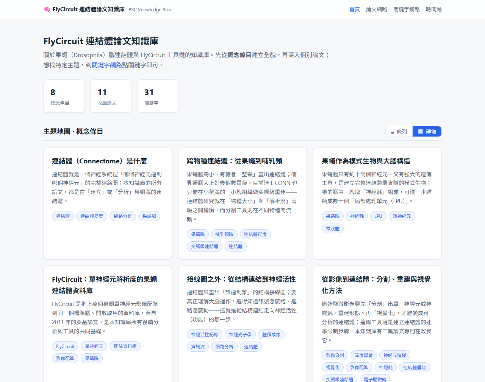
磚塊式： 同一批概念條目改用卡片呈現（還帶出關鍵字標籤）。按右上角的切換鈕就能換，瀏覽器會記住你的選擇。
4 時間軸反過來🟢 使用者： 時間軸要反過來，新的在上面。
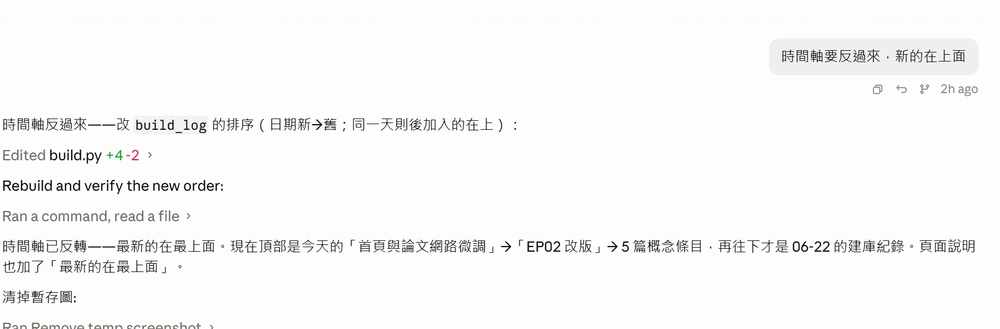
實際對話截圖： 短短一句話，AI 就完成排序反轉並驗證。
AI 做了什麼 改 build.py 裡時間軸的排序邏輯（日期新→舊；同一天則後加入的在上），重建後驗證、並在頁面加註「最新的在最上面」。一個小需求，兩行程式。
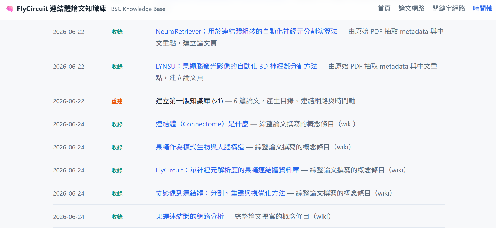
改版前： 舊的在上——2026-06-22 的紀錄排在最頂端。
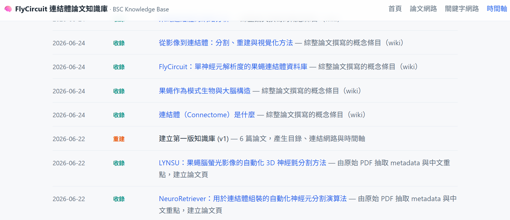
改版後： 新的在上——最新的紀錄排到最上面。
5 再微調：節點短標改三段式🟡 使用者： 前面 node_label：用「主題/工具名/年份」（可縮寫），例如 Vis/Kaleido/2018。
AI 做了什麼 把 6 篇論文的節點短標改成三段式：有命名工具的放中段（Vis/Kaleido/2018、Seg/NeuroRetriever/2021），純分析論文則用兩段（Info Flow/2015）。同步更新規則書與圖上文字。觀念： 命名規則這種小地方，定清楚一次，之後每篇都照辦。
6 內容擴充：基本資料＋科普版＋學術版（重點：重讀原文）🟢 使用者： 好，再來處理內容的部分，所有的單篇論文頁面做以下擴充：
在「一句話總結」與「摘要」中間，加入「論文基本資料」：期刊、卷數、期數、頁數（編號）、發表年月、機構（用一列一直寫下去，不要一個機構一列，會太長）。
「中文摘要」後面加上「科普文」，閱讀對象是對科學有興趣的高中生，1500-2000 字。
科普文後面是「學術版介紹文」，閱讀對象是研究生以上到教授級研究人員等專業人士，內容用現有的「關鍵發現」、「方法」、「重要性與定位」為基礎擴寫，方法要寫詳細一點。
注意！！！ 再寫前面三項時，要回頭把論文重新仔細讀一次，而不是用你的生成能力以現有的文字隨便擴寫。
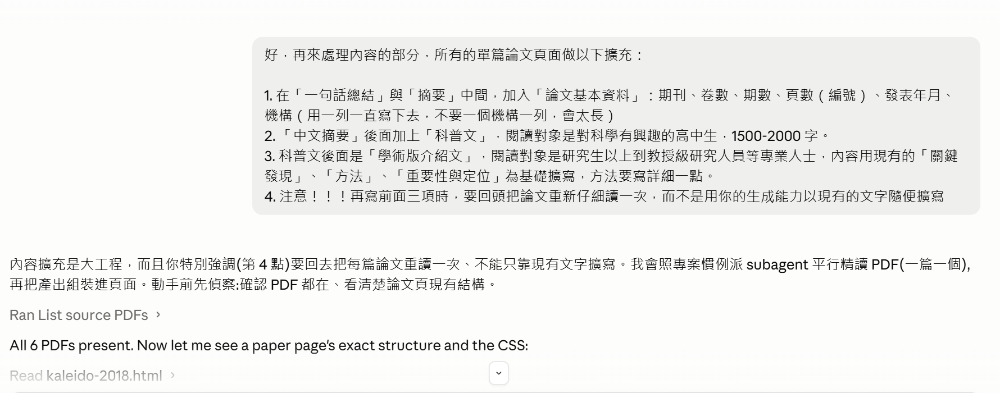
實際對話截圖： 第 4 點（三個驚嘆號）是這段的靈魂——要 AI 回原文重讀，不要拿既有文字膨脹 。
AI 做了什麼 這是大工程。AI 照專案慣例派 6 個 Subagent 平行精讀 （一篇 PDF 一個分身），各自從原始論文抽出正式書目、寫出 1500–2000 字科普版與更詳盡的學術版，回傳結構化結果；主程式再統一注入 6 個論文頁，並把機構收斂成「一列、去重」。為什麼第 4 點重要： 如果只叫 AI「擴寫」，它會用頁面上已有的中文去膨脹，字數變多但沒有新資訊；明確要求「回原文重讀」，它才會挖出原本沒寫的方法細節與正確數字。
7 段落間距 → AI 抓到自己的 bug🔴 使用者： 段落之間的距離要加大一點（或加空行），以利閱讀。
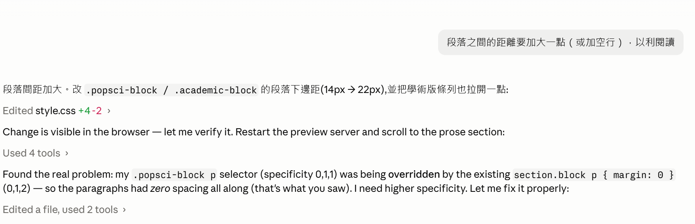
實際對話截圖： AI 老實說出「我先前那條規則被舊規則蓋掉了」——這就是「驗證」的價值：沒驗證，就會以為改好了。
AI 做了什麼 第一次它調大了段落間距，但驗證時發現根本沒生效 。追下去抓到真正的原因：它寫的樣式規則「優先序」太低，被一條更強的舊規則 section.block p { margin: 0 } 蓋掉了——所以這些段落其實一直都是零間距 （這正是使用者看到的）。AI 提高規則優先序才真正修好。
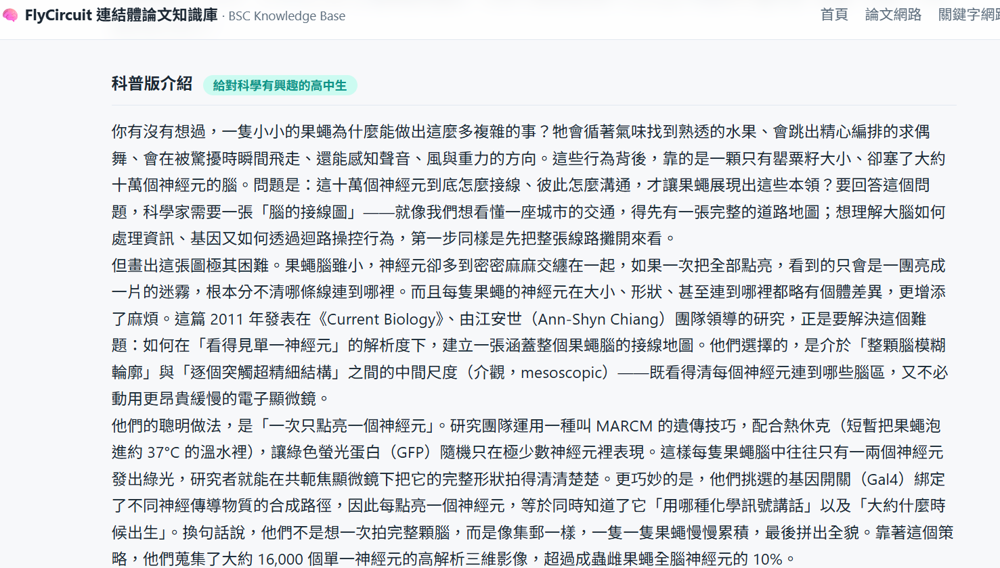
改版前： 科普版段落擠成一團、沒有行距。
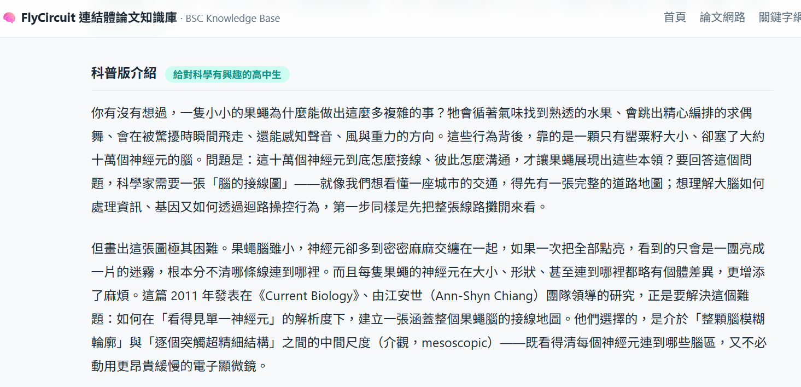
改版後： 段落之間有明顯空行，好讀許多。
教學點： AI 跟人一樣會犯錯。它說「改好了」不代表真的好了——所以每一步都要實際打開來看 （這集 AI 用瀏覽器自動量了段落間距，才發現是 0）。
8 方程式改用 LaTeX 渲染論文方法裡有數學式，原本是純文字硬排，很難看。使用者貼了一張截圖說：
🔴 使用者： （附上方程式截圖）方程式請用 Latex-like 渲染比較好看。
AI 做了什麼 在論文頁載入 MathJax（一個把 LaTeX 語法渲染成數學符號的工具），再派 Subagent 把每頁的數學式改寫成 LaTeX。驗證時又揪出一個隱藏 bug ：有些不等式被寫成裸的 <、>，瀏覽器會把「< 0.001」誤當成一個 HTML 標籤、把後面內容吃掉——AI 把全部裸符號逸出成安全寫法才正常。連 EP01 就寫好的舊頁面也一起修到了。
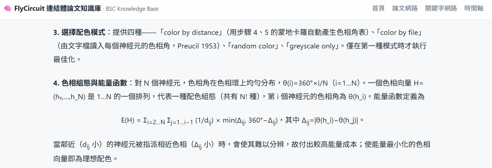
改版前： 方程式是純文字＋下標硬排，擠成一行、很難看。
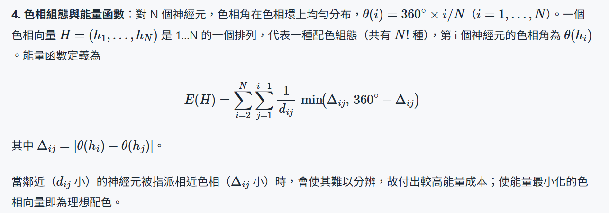
改版後： 用 MathJax 把 LaTeX 渲染成漂亮的數學符號（求和、分數、下標）。
9 順手健檢：標點與符號🟢 使用者： 你講的那些瑕疵再檢查一下並修正。
AI 做了什麼 寫一支小程式（lint）掃過全部論文頁，用「堆疊法」找出沒成對的全形括號「」（），以及前一段提到的裸 < >。一處一處定位、修正，最後全部平衡。觀念： 能用程式自動檢查的瑕疵，就不要靠肉眼一頁頁看。
10 關鍵字頁加「約 300 字說明」🟢 使用者： 接下來，在「關鍵字」頁面（點了關鍵字網路裡面的節點會出現在下方的）裡，新增約 300 字對這個關鍵字的說明。
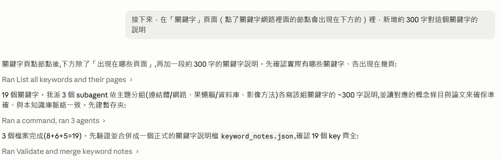
實際對話截圖： 點關鍵字後，除了「出現在哪些頁面」，再加一段約 300 字的說明。
AI 做了什麼 派 3 個 Subagent 依主題分組，各寫該組關鍵字的約 300 字說明（並讀對應論文確保準確），合併成一個 keyword_notes.json，由 build.py 嵌進關鍵字頁。點任一關鍵字，下方先顯示這張說明卡、再列出相關頁面。
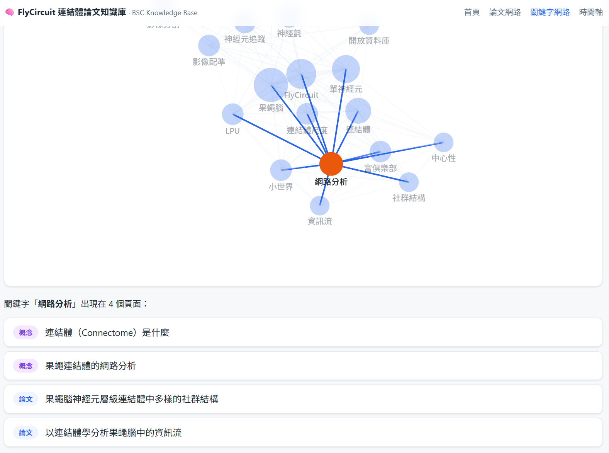
改版前： 點關鍵字只列出「出現在哪些頁面」。
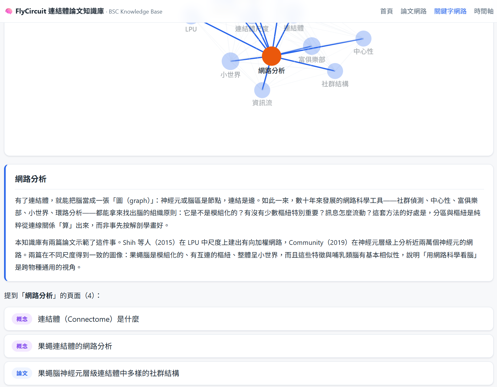
改版後： 頁面清單上方多了一張約 300 字的關鍵字說明卡。
11 問流程：丟一篇新 PDF，你會做什麼？🔵 使用者： 架構跟內容的模式差不多了，接下來是更新：如果我把新的論文 PDF 丟進 paper 目錄裡，你會做哪些處理？列出來。
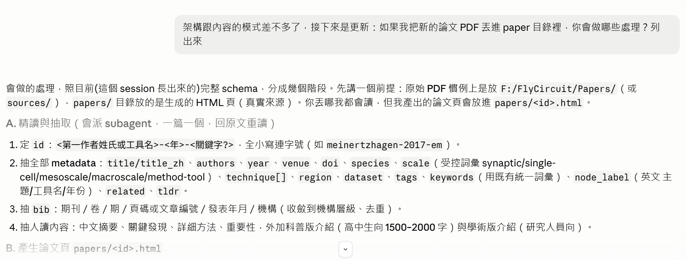
實際對話截圖： 使用者沒有馬上叫它做，而是先問「你會怎麼做」——確認流程對不對，再放行。
AI 做了什麼 把收錄一篇新論文的完整流程列出來：精讀 PDF（派分身）→ 抽 metadata 與基本資料 → 寫科普版／學術版 → 生成論文頁 → 雙向串好「相關論文」連結 → 補新關鍵字說明 → 視情況更新概念條目 → 跑 build.py → 驗證 → 回報。觀念： 「先問流程、看過再放行」，比直接叫它做更安全——尤其當你要把一件事變成「之後每次都這樣做」的標準流程時。
12 把流程寫進規則書AI 問你 （接上一段）AI 列完收錄流程後問你：要不要把這套流程正式寫進規則書 CLAUDE.md 的 §4，讓未來每一次收錄新論文都自動照這套做？
🟢 使用者： 要。
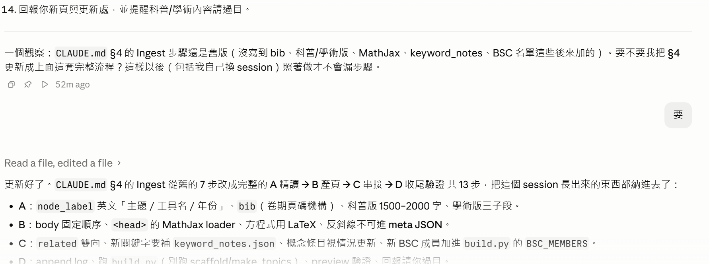
實際對話截圖： 一個字「要」，AI 就把剛剛列的流程寫回規則書。
AI 做了什麼 把 CLAUDE.md（規則書）裡的「收錄流程」從舊的 7 步，改寫成完整的 13 步標準作業程序（精讀 → 產頁 → 串接 → 收尾驗證）。這就是「規則書跟著長大」 ：把剛剛確認過的好流程固定下來，未來任何一次工作階段都自動照這套做，不會走樣。
13 擴充團隊名單🟢 使用者： 增加團隊成員：Ting-Kuo Lee（李定國教授）、Chung-Chuan Lo（羅中泉教授）、Ching-Che Charng（強敬哲博士）、Kuan-Lin Feng（馮冠霖博士）。
AI 做了什麼 把 4 位加進 build.py 的 BSC_MEMBERS 名單（也更新記憶），重建後驗證。AI 提醒：目前圖上沒有視覺變化（6 篇本來就因你或江老師而全加框），這 4 位是為之後收錄的論文鋪路 ——這個鋪路，下一步就用上了。
14 收錄 5 篇新論文 → 關鍵決策：要不要擴大範圍🟢 使用者： 我有丟新的論文到 Papers 裡，請更新知識庫。
AI 做了什麼 先盤點：發現 5 篇新 PDF。逐一讀首頁辨識身分後，AI 停下來 ——因為其中 1 篇是你們團隊的果蠅論文（完全符合現有範圍），另外 4 篇卻是通用／哺乳類的連結體方法論文（EM 分割、光學顯微鏡連結體、活性記錄）。收了它們，等於把知識庫從「果蠅／FlyCircuit」擴大 成「一般連結體方法學」。這是方向問題，AI 跳出決策選單讓使用者定。
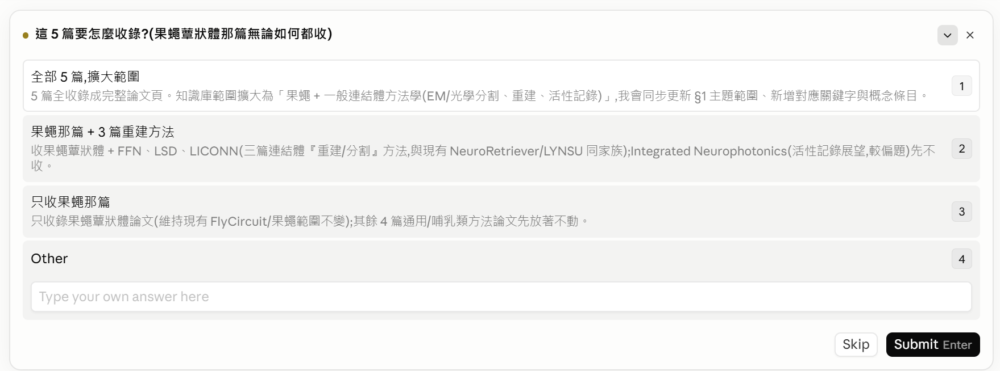
真實截圖： AI 的決策選單——5 篇要全收（擴大範圍）、只收果蠅那篇、還是折衷？這是「該你決定」的岔路。
AI 問你 這 5 篇要怎麼收？（果蠅蕈狀體那篇無論如何都收。）選項：全部 5 篇、把知識庫範圍擴大 ／只收果蠅那篇＋3 篇重建方法／只收果蠅那篇。
🟣 使用者： （在選單中點選）全部 5 篇，擴大範圍。
AI 做了什麼 派 5 個 Subagent 各精讀一篇，產出完整論文頁（含基本資料、科普版、學術版、LaTeX）；雙向補好「相關論文」連結（新論文 ↔ 既有 6 篇）；新增 12 個關鍵字並各補說明；更新 §1 主題範圍。這時 BSC 加框終於有意義了： 7 篇團隊論文有橘框、4 篇外部方法沒框，一眼分得出來——第 13 步的鋪路在這裡兌現。
15 查證：補上 LICONN 的正式出版資料🔴 使用者： LICONN 已經發表了，你查一下出版資料補上去。
AI 做了什麼 用 WebSearch 上網查到 LICONN 的正式書目（Nature 第 642 卷、398–410 頁、2025 年 6 月），把論文頁裡原本「線上優先發表」的暫定資料換成正式卷期頁。觀念： AI 不只會處理你給的檔案，需要時還能上網查證、補齊資訊。
16 主題地圖該不該擴建？🔵 使用者： 增加這些文章之後，首頁的主題地圖是不是該擴建了？該增加哪些？還是你覺得還不用。
AI 做了什麼 給出判斷與理由：該擴——因為首頁那 5 個概念條目全是「果蠅中心」，反映不出新拓寬的廣度；那 4 篇外部方法目前沒有首頁概念入口。AI 建議 3 篇新概念條目（A 成像模態、B 結構→功能、C 跨物種），各附該收哪些論文，跳出選單讓使用者選。
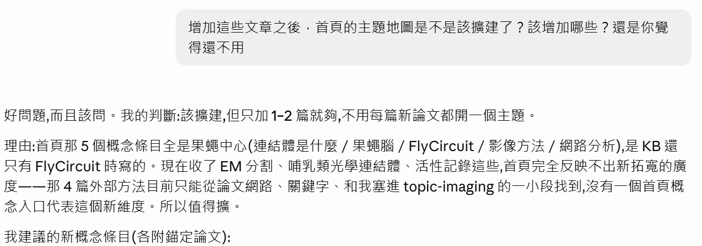
實際對話截圖： 使用者問「該不該擴」，AI 不含糊，直接給判斷＋具體建議。
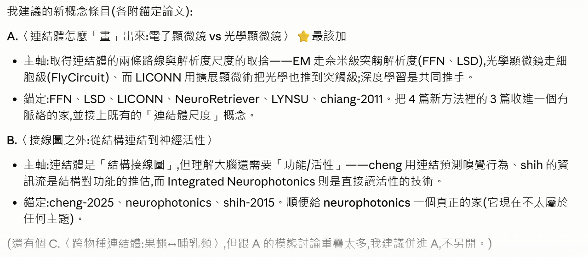
實際對話截圖： AI 提的 A／B／C 三篇，各自綜整哪些論文都講清楚。
AI 問你 主題地圖要怎麼擴？選項：加 A＋B 兩篇（推薦）／只加 A／A＋B＋C 三篇都做 ／先不用、維持現狀。（A＝成像模態、B＝結構→功能、C＝跨物種。）
🟣 使用者： （在選單中點選）A＋B＋C（三篇都做）。
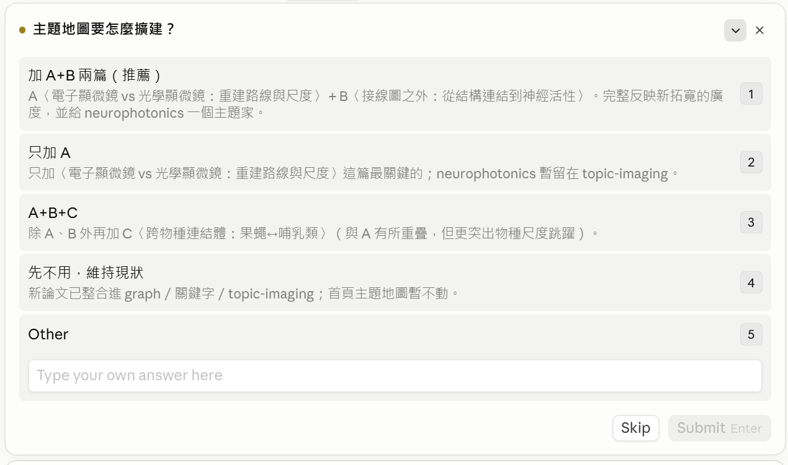
真實截圖： 主題地圖擴建的決策選單，使用者選了「A＋B＋C」。
AI 做了什麼 派 3 個 Subagent 各寫一篇新概念條目（讀錨定論文＋對齊既有風格），用模板組成頁面、串好關鍵字與相關論文。主題地圖從 5 篇長到 8 篇，首頁終於能反映「果蠅核心 ＋ 一般方法學」的全貌。
17 關鍵字變多了 → 分類上色🟢 使用者： 現在關鍵字變得滿多的，我覺得可以把關鍵字分類一下，在關鍵字網路上把節點以不同顏色標記（注意顏色不要太淺免得不清楚）。
AI 做了什麼 把 31 個關鍵字分成 5 類（連結體與資料庫／腦結構與生物／成像與分割方法／網路分析／神經活性與功能），各配一個飽和、不過淺的顏色，在 build.py 設一份分類表，節點依分類上色、底部加圖例。還順手做了「未分類偵測」——以後若有關鍵字忘了歸類，會自動提醒。點選關鍵字時保留它的分類色、改用深色外框標示選取。
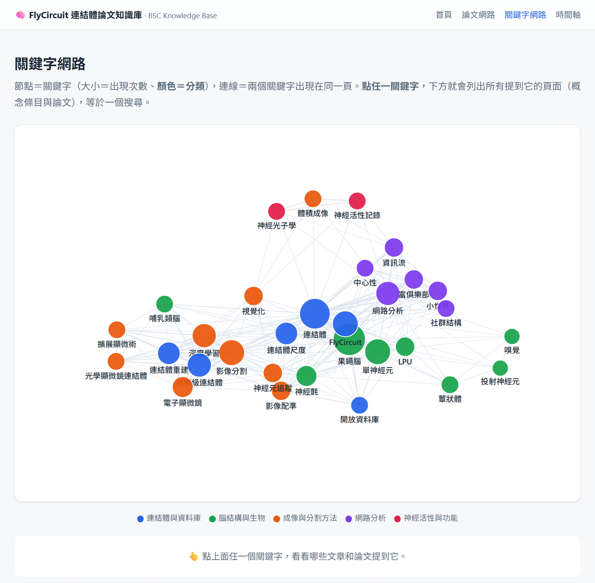
真實截圖： 分類上色後的關鍵字網路（含底部圖例）。相關的關鍵字本來就會聚成一團，上色後更一目了然。
18 問原理（順帶糾錯）🔵 使用者： 你畫網路圖時，是怎麼放每個節點的位置的？有經過計算嗎？（例如 force-directed layout），還有，嚴禁簡體中文。
AI 做了什麼 據實回答：兩張網路圖用的方法不同 ——論文網路是固定的「圓形排列」（沒有用力導向，純粹等分在圓周上）；關鍵字網路才是真正的 force-directed （節點互相排斥、有關聯的互相吸引，跑 320 次迭代＋模擬退火降溫，相關的就自己聚成團）。兩者都是決定性 的（不用亂數，所以每次重建長得一樣）。寫進長期記憶 ，並掃過所有知識庫檔案確認產出本身是乾淨的。
教學點： 這段有兩個價值。一是 AI 可以解釋自己的作法 ——你隨時能問「這怎麼算的」。二是 AI 會犯錯、而且要被糾正 ：使用者一句「嚴禁簡體中文」，AI 不只當下改，還把它記起來，以後自動遵守。把偏好寫進記憶，你就不用每次重講。
PART 2 最佳實踐清單把上面的迭代過程濃縮成一張可快速掃描的表。想看實例就點「對應段落」跳回去。
實踐 對應段落 為什麼重要 不滿意要講得「具體」 ① 「首頁缺概念層」比「不好看」可執行一百倍。 大改版先攤開計畫再動手 ① 、② 資訊架構動之前，先讓你看過、確認。 把偏好／名單寫進記憶 ③ 、⑱ BSC 名單、嚴禁簡體——說一次，以後自動遵守。 要「重讀」，不要「擴寫」 ⑥ 回原文才挖得出新內容，否則只是把舊字膨脹。 每一步都實際打開來驗證 ⑦ 、⑧ 「說完成」≠「真的對」——間距是 0、符號被吃掉都這樣抓到。 能自動檢查的就用程式 lint ⑨ 括號成對、裸符號，靠程式掃比肉眼可靠。 先問流程、看過再放行 ⑪ 、⑫ 要變成「以後都這樣做」的事，先確認流程再固定進規則書。 方向／範圍的事，停下來讓你決策 ⑭ 、⑯ 擴不擴大範圍、要不要擴主題地圖，是你的事。 研究／精讀派 Subagent 平行做 ⑥ 、⑭ 、⑯ 一篇一個分身，主線乾淨又加速。 善用工具：截圖、搜尋、查證 ⑧ 、⑮ headless 截圖驗證、WebSearch 補出版資料。
PART 3 本次成果（養大後的知識庫）經過上面 18 段迭代，EP01 的雛形被養成這樣：
首頁：從「論文清單」變「概念地圖」
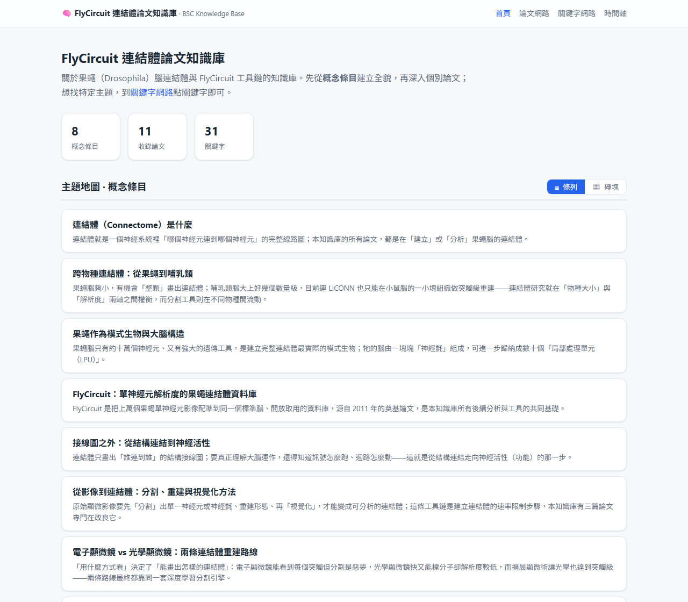
真實截圖： 新首頁。上方是 8 篇「概念條目」（可切換條列／磚塊），論文清單獨立成另一頁，只留一個入口。
論文網路：11 篇、BSC 成員加框
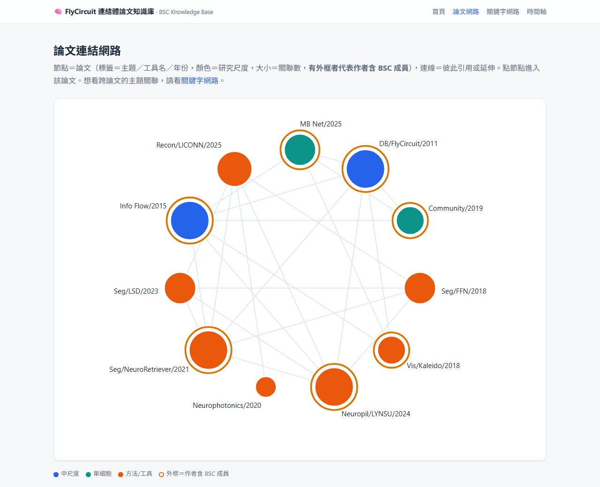
真實截圖： 論文網路長到 11 篇。7 篇團隊論文有橘色外框、4 篇外部方法沒有 ——加框終於凸顯出差異。
關鍵字網路：31 個關鍵字、分類上色
真實截圖： 關鍵字網路（力導向佈局），31 個關鍵字分 5 類上色、點任一個就列出所有相關頁面＋約 300 字說明。
單篇論文：基本資料＋科普版＋學術版
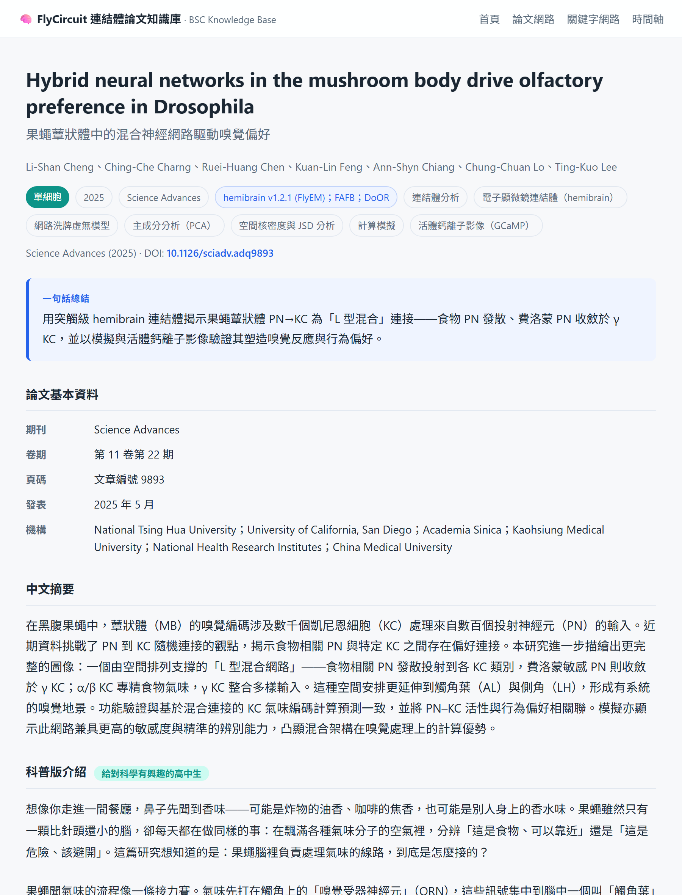
真實截圖： 每篇論文頁多了「論文基本資料」（機構一列）、給高中生的「科普版」、給研究人員的「學術版」，數學式以 LaTeX 漂亮渲染。
數字總結：雛形 → 成熟
項目 EP01（雛形） EP02（養大後） 論文 6 篇（純果蠅） 11 篇 （果蠅 ＋ 通用／哺乳類方法）概念條目 0 8 篇 wiki 文章關鍵字 0 31 個 ，分 5 類上色，各附約 300 字說明單篇論文深度 摘要＋關鍵發現 ＋ 基本資料、科普版（1500–2000 字）、學術版、LaTeX 方程式 首頁 論文清單＋篩選器 概念地圖（條列／磚塊可切換） 主題範圍 果蠅 / FlyCircuit 擴大為「一般連結體方法學」 人寫的程式碼 0 行 ——全部由 AI 產出，人只負責出題、決策、糾錯
PART 4 10 個核心教訓把這次迭代的精髓濃縮成 10 條帶走——每條都對應你剛讀到的某個段落。
① 迭代才是常態：不滿意就具體說
真實研究幾乎不會「一次到位」。EP02 全是「這裡再改一下」。關鍵是
講得具體 ：「首頁只是論文清單、缺少概念層」，AI 才知道往哪改（
① ）。
② 要「重讀」，不要「擴寫」
叫 AI 寫深度內容時，最重要的一句是「
回頭把原文重新讀一次 」。否則它會用頁面既有文字膨脹，字數變多卻沒有新資訊（
⑥ ，那三個驚嘆號）。
③ AI 會犯錯，每一步都要驗證
這集 AI 自己踩了三個坑：段落間距其實一直是 0（樣式被舊規則蓋掉）、不等式的裸符號被瀏覽器當標籤吃掉、回覆混進簡體字。
全靠驗證和糾錯才抓到。 「它說完成」永遠不等於「真的對」（
⑦ ⑧ ⑱ ）。
④ 能自動檢查的，就寫程式 lint
括號有沒有成對、有沒有裸符號——這種瑣事用一支小程式掃，比一頁頁肉眼看可靠太多（
⑨ ）。
⑤ 規則書要跟著長大
知識庫變複雜，就把新的維護流程寫回
CLAUDE.md。本集把「收錄新論文」從 7 步擴成 13 步 SOP，未來每次自動遵守，越改越不會亂（
⑪ ⑫ ）。
⑥ 把偏好與名單寫進記憶
BSC 成員名單、「嚴禁簡體中文」——說一次，AI 寫進長期記憶，以後每次工作自動遵守，你不必重講（
③ ⑱ ）。
⑦ 方向與範圍，是「你的事」
要不要把知識庫從果蠅擴大到一般方法學、主題地圖要不要擴建——這些 AI 不該自己決定。它攤開選項、講清楚代價，跳出決策選單讓你點（
⑭ ⑯ ）。
⑧ 鋪路會在後面兌現
第 13 步先把 4 位團隊成員加進名單時，圖上「沒有任何變化」；但第 14 步收了 4 篇外部論文後，BSC 加框立刻分出了團隊與外部。有些設定是為了未來。
⑨ 研究／精讀，交給 Subagent 平行做
6 篇重讀、5 篇新收、3 篇概念條目——全都是「一篇 PDF 一個分身」平行進行。主線對話保持乾淨，速度又快（
⑥ ⑭ ⑯ ）。
⑩ 善用 AI 的各種工具
自動截圖驗證版面、上網（WebSearch）查 LICONN 出版資料、寫 lint 揪錯——遇到「重複或查證」的工作，先想有沒有工具可用，不要硬幹（
⑧ ⑮ ）。
結語：給初學者的下一步
如果這份文件你只想記住三句話：
迭代不可恥，是常態。 第一版做出來只是起點；願意一次次說「這裡再改」，作品才會變好。「重讀」勝過「擴寫」，「驗證」勝過「相信」。 要深度就叫它回原文；要正確就每步打開來看——AI 會錯，你是把關的人。方向你決定，後勤交給它。 該你拍板的（範圍、取捨）AI 會停下來問；瑣碎的後勤（讀、寫、串連、截圖、查證）它全包。
想動手試試看？如果你已經有一個用 AI 做出來的東西（任何文件、整理、小工具），就挑一個你「看了不太滿意」的點，打開 Claude Code，具體 說出哪裡不夠好、想變成什麼樣子——然後照這份文件的節奏：在岔路上做決策、要求它重讀而非擴寫、每一步都打開來驗證。你會發現，把東西「養大養好」，比從零做出來更需要你的判斷力，而這正是你的價值所在。
讀完了？來檢驗一下 ✏️
10 題單選、當場計分，看看你掌握了多少迭代心法。
來做隨堂測驗 →